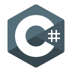

Unityで使用しています。
C++と同じくCの要素を無くすことを意識して使用しています。
C#特有のLINQやプロパティなどの仕組みを理解しています。
Push it!!
Portfolio
Portfolio
Profile
Name : Miyoshi Takuto
Age : 17
Birth : 2003
Blood Type : A
Like : Cooking
Unlike : Injection
こんにちは。
私はC系をメインにいくつかの言語とツールを使い、ゲーム開発をしている専門学生です。
現在('21/7月)は、C++をメインに勉強しています。
コードを書く上で意識しているのは、保守性の高いコードにすることです。
具体的には『読みやすい 拡張しやすい 安全性が高い』これらを意識しています。
Skill
C

最初に学習を始めた言語で大まかに仕組みを理解しています。
C++

メインで使用している言語で、Cの要素を無くすことを意識して使用しています。
C#
Unityで使用しています。
C++と同じくCの要素を無くすことを意識して使用しています。
C#特有のLINQやプロパティなどの仕組みを理解しています。
JavaScript

HTMLの機能の一部を実装するために使用しています。
JavaScriptにおける動的型付などの癖を把握しています。
HTML5

ウェブサイトを作るときに使用しています。
基本的な書き方やルールを把握しています。
CSS3

HTMLとセットで使用しており、基本的な書き方を把握しています。
Unity
複雑な3Dゲームを作る時や、視覚化して確認したいことがある時などに使用しています。
Unity特有の機能を把握しており、UniTaskやInputSystemなど拡張機能の使用経験もあります。
DxLib

ゲームを作る時は基本的にこのライブラリを使用しています。
メインで使用しているライブラリなので、癖やどういった構造にすれば良いかを理解しています。
Visual Studio

メインで使用しているIDEで、基本的な操作から詳細設定まである程度把握しています。
Visual Studio Code

メインで使用しているテキストエディタです。
Visual Studioよりも軽く、拡張機能も充実しているため、コーディングもこちらで行っています。
また、C++をMinGW(gcc)で簡単にビルドできる設定もしています。
GitHub

複数人で開発を行う時や、コードをウェブ上で公開したい時に使用しています。
SourceTree
GitHubとファイルを送受信する時に使用しています。
GUIでの操作が主ですが、簡単な操作はコンソールでも行えます。
Created
Auto Scroll Craft
Unity / C#
3ヶ月
Unityで個人制作したアドベンチャーゲームです。 木や岩を破壊してアイテムを手に入れ、敵を倒しながら先へ進みハイスコアを目指します。
RepositorySlack Client
HTML5 / JavaScript
約1週間
ウェブ上でSlackにメッセージを送ったり、確認したりできるツールです。 LINEのUIに近づくように作りました。 メッセージの送受信,添付ファイルの確認,送信日時の確認ができます。
※Privateリポジトリのためリンクはありません。
Shooting(仮)
DxLib / C++
2週間～ (制作途中)
現在('21/7月)制作中のシューティングゲームです。 初めて使う機能や数学など、自分の中での新しいものに挑戦しています。 多くの敵や弾の中を、武器やスキルを使って掻い潜るゲームになる予定です。
RepositoryLatest:2021/7/22 @ Miyoshi-Takuto